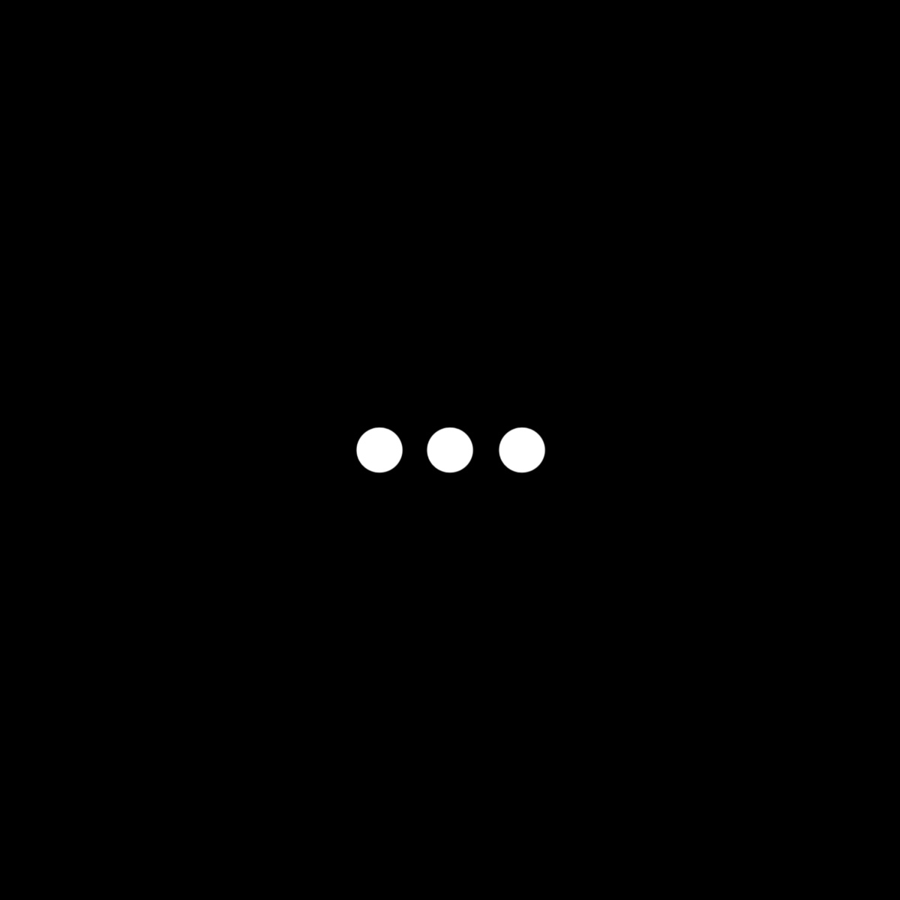

To start, we discussed the inspirations and origins of the track, as well as the tone and colours that came to mind. With a short turnaround of a little over a month, I began experimenting under-camera - playing with various materials - settling on a backlit multi-plane setup.
The concept here is quite simple, I used a fixtured lamp to project designs upward, hitting the backside of a thin paper sheet. The light is caught within the sheet and is photographed from the frontside. Shadow puppetry, really - using black card cut-out. What differentiates (and complicates) is the use of a 'gobo' (Go Between Optics), of which I designed and animated. Gobos are practical light-blockers, most often used for stage lighting and projection. My versions of gobo operate differently, they duplicate and shape a light source, projecting a separate, overhead design.

These are some basic pinhole gobos. They can be made with any heat-safe material suitable for blocking light.
The overhead design used for this example is a medium-sized, punched circle in black card:
The overhead design - as seen backlit.
Looking at the three examples below:
A simple pinhole gobo sits slightly elevated above the light source, projecting the overhead design clearly upon the display pane.
Two pinholes produce two instances of overhead design, set apart.
And three, producing three instances.
The quantity and configuration of the pinholes project the overhead design at multiple varied perspectives.
The hue and tonal variations can be attributed to the casing of the bulb itself. This gobo technique essentially projects the unfocused face of the bulb upon the display pane, which is then masked by the overhead design. Depending on the gobo and bulb, unique interferences of colour and tone appear within the light.
The bulb's casing.
Also, it is crucial that the glass panes may be adjusted for each setup. The diameter of a gobo's pinhole affects the rendering of the overhead design in a similar manner to a camera's aperture, thus the distances of the glass planes are compensated for focusing.
Don't let my particular setup deter you from experimenting with this method; you can construct its elements in many different ways and orientations. The fundementals are: Light, Pinhole Gobo, Design and Surface; all at varying distances - hold them up with toothpicks if you'd like.
-
For Quaking's project, I performed all movements by hand under camera; filmed at 25 and 30fps. The reason is twofold: capturing the footage frame-by-frame at 30fps would easily add another 3 months of production. But more importantly, the complimentarity between sound and image was improved by the natural emergence of motion blur - it's something you can't fake.
I completed the widescreen loop first. I don't have many notes here, though it's probably my favourite of the three. What I find especially cool is the loop's intermittent dissolving, revealing its underlying static, horizontal structure - which came as an unexpected gift.
The second loop serves as the track's Spotify Canvas, necessitating it to be 8 seconds or less. I find that full 8 second loops can exhibit some lagging issues on Spotify, so I created a 6 second loop instead.
The third loop was created by manipulating the gobo itself, rather than the overhead design. I like how it phases new structures in rotation - had me thinking of John Whitney.
My technical understanding of what I was doing here has only crystallised as of writing this blog - complimenting Quaking's track was really all I had in mind. If you have any questions, thoughts, or comments, catch me at @ross.malo.art on